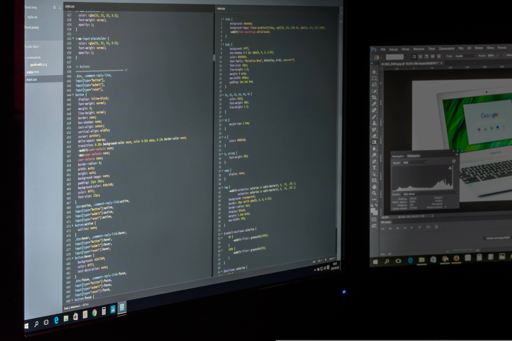

Bienvenido al sitio web de la Práctica 02
El lenguaje HTML (HyperText Markup Language) es la base fundamental para estructurar cualquier página en la web. Mediante el uso de etiquetas semánticas conseguimos que el contenido sea claro, accesible y fácil de interpretar tanto para los usuarios como para los navegadores.
En este proyecto aplicaremos conocimientos esenciales como la creación de listas ordenadas y desordenadas, el enlazado relativo entre documentos, la optimización de recursos gráficos y la integración de formularios funcionales.
Galería sobre Diseño Web
